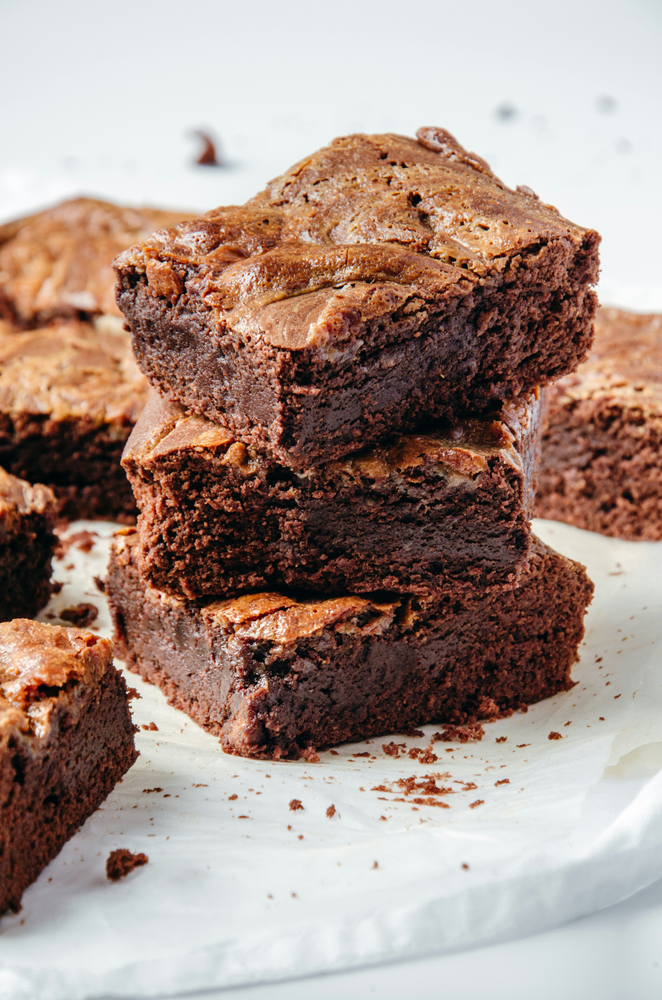

odin recipes

This easy brownie recipe takes minutes to whip up in one bowl and about 20 minutes to bake for a moist and fudgy crowd-pleasing treat!
Ingrediens:
- Sugar: These easy brownies start with two cups of white sugar.
- Flour: All-purpose flour creates structure in the batter.
- Butter: 1 cup of melted butter gives the brownies moisture and richness.
- Eggs: Eggs lend even more moisture. Plus, they help bind the batter together
- Cocoa powder: Of course, you'll need cocoa powder for chocolate brownies!
- Vanilla: Vanilla extract enhances the overall flavor of the brownies
- Baking powder: Baking powder acts as a leavener, which means it helps the brownies rise
- Salt: A pinch of salt enhances the flavors of the other ingredients
- Walnuts: Nuts are optional, of course, but they add a welcome crunch
Steps:
- Gather all ingredients.
- Preheat the oven to 350 degrees F (175 degrees C). Grease a 9x13-inch pan with baking spray.
- Whisk sugar, flour, melted butter, eggs, cocoa powder, vanilla, baking powder, and salt in a large bowl until combined
- Spread the batter into the prepared pan.
- Decorate with walnut halves
- Bake in the preheated oven until top is crinkled and a toothpick comes out with a few moist crumbs, about 20 to 30 minutes.
- Let cool completely in the pan on a wire rack before slicing into squares. Enjoy!